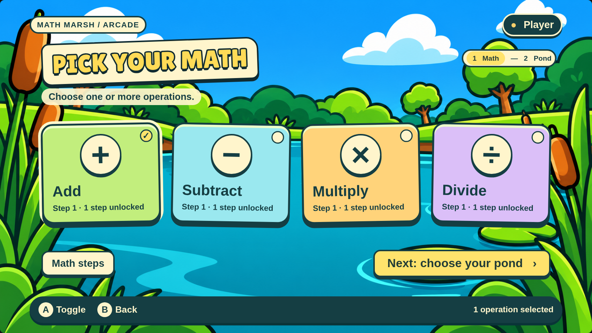

Implementation reference pack. Open the HTML studies directly in a browser after downloading/extracting the complete folder. No server or network is required.
Implementation brief and acceptance criteria · Evidence and limitations · File hashes and provenance

Design references, not production game code. Sample values, illustrated boards, and gallery navigation must not replace current game rules or runtime behavior.